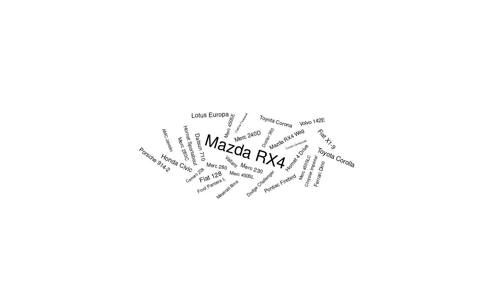

geom_text_wordcloud adds text to the plot using a variation of the
wordcloud2.js algorithm. The texts are layered around a spiral centered on
the original position. This geom is based on
geom_text_repel which in turn is based on
geom_text. See the documentation for those functions
for more details. By default, the font size is directly related to the size
aesthetic. geom_text_wordcloud_area is an alias, with a different set
of default, that chooses a font size so that the area of the text is now
related to the size aesthetic.
geom_text_wordcloud(mapping = NULL, data = NULL, stat = "identity", position = "identity", ..., parse = FALSE, nudge_x = 0, nudge_y = 0, eccentricity = 0.65, rstep = 0.01, tstep = 0.02, perc_step = 0.01, max_steps = 10, grid_size = 4, max_grid_size = 128, grid_margin = 1, xlim = c(NA, NA), ylim = c(NA, NA), seed = NA, rm_outside = FALSE, shape = "circle", mask = NA, area_corr = FALSE, area_corr_power = 1/0.7, na.rm = FALSE, show.legend = FALSE, inherit.aes = TRUE, show_boxes = FALSE) geom_text_wordcloud_area(mapping = NULL, data = NULL, stat = "identity", position = "identity", ..., parse = FALSE, nudge_x = 0, nudge_y = 0, eccentricity = 0.65, rstep = 0.01, tstep = 0.02, perc_step = 0.01, max_steps = 10, grid_size = 4, max_grid_size = 128, grid_margin = 1, xlim = c(NA, NA), ylim = c(NA, NA), seed = NA, rm_outside = FALSE, shape = "circle", mask = NA, area_corr = TRUE, area_corr_power = 1/0.7, na.rm = FALSE, show.legend = FALSE, inherit.aes = TRUE, show_boxes = FALSE)
| mapping | Set of aesthetic mappings created by
|
|---|---|
| data | A data frame. If specified, overrides the default data frame defined at the top level of the plot. |
| stat | The statistical transformation to use on the data for this layer, as a string. |
| position | Position adjustment, either as a string, or the result of a call to a position adjustment function. |
| ... | other arguments passed on to
|
| parse | If |
| nudge_x, nudge_y | Horizontal and vertical adjustments to nudge the starting position of each text label. |
| eccentricity | eccentricity of the spiral. Default to .65 |
| rstep | relative wordcloud spiral radius increment after one full rotation. Default to .01. |
| tstep | wordcloud spiral angle increment at each step. Default to .02. |
| perc_step | parameter used to define the minimal distance between two successive candidate positions on the ellipse. Default to .01 |
| max_steps | maximum number of steps avoided thanks to this minimal criterion. Default to 10. Set to 1 to recover the previous behavior |
| grid_size | grid size used when creating the text bounding boxes. Default to 4 |
| max_grid_size | maximum size of the bounding boxes. Default to 128 |
| grid_margin | safety margin around the texts. Default to 1. |
| xlim, ylim | Limits for the x and y axes. Text labels will be constrained to these limits. By default, text labels are constrained to the entire plot area. |
| seed | Random seed passed to |
| rm_outside | Remove the texts that could not be fitted. Default to
|
| shape | select the shape of the clouds among |
| mask | a mask (or a list of masks) used to define a zone in which the
text should be placed. Each mask should be coercible to a raster in which
the color "black" defined the text zone. When a list of masks is given, the
mask_group aesthetic defines which mask is going to be used. Default to
|
| area_corr | Set the font size so that the area is proportional to size
aesthetic raised to a certain power when the scale_size_area is used. As
this is not the classical choice, the default is |
| area_corr_power | the power used in the area correction. Default to 1/.7 to match human perception. |
| na.rm | Remove missing values if TRUE |
| show.legend | is set by default to |
| inherit.aes | Inherits aesthetics if TRUE |
| show_boxes | display the bounding boxes used in the placement algorithm is set
to |
a ggplot
set.seed(42) data("love_words_small") ggplot(love_words_small, aes(label = word, size = speakers)) + geom_text_wordcloud() + scale_size_area(max_size = 20) + theme_minimal()ggplot(love_words_small, aes(label = word, size = speakers)) + geom_text_wordcloud_area() + scale_size_area(max_size = 20) + theme_minimal()